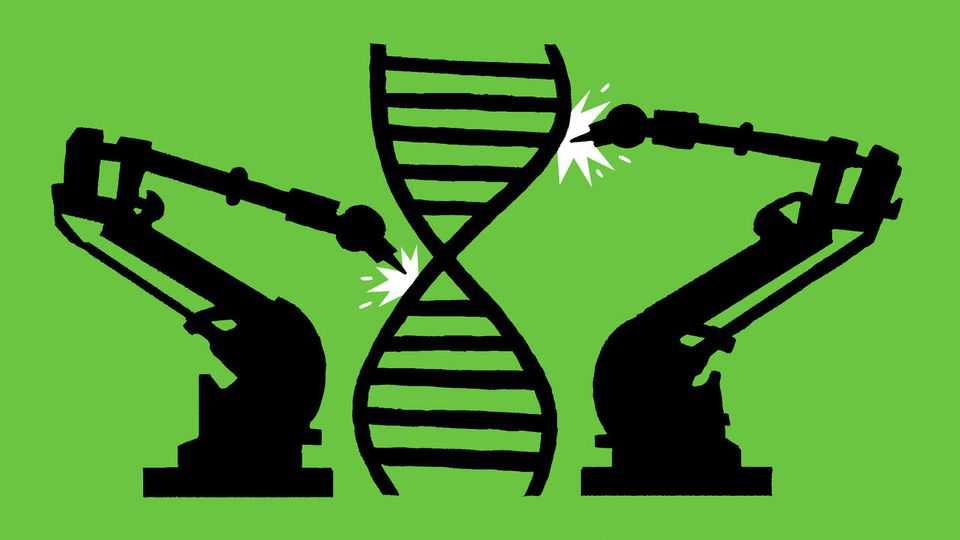
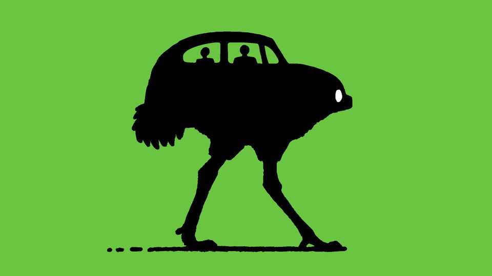

AI will make it possible to design and build organisms from scratch
Synthetic biology has arrived at last

Oct 15th 2026
Twenty years ago, The Economist ran a story about a factory that could make dragons. It was an April Fool, based on the idea that living cells could be modelled accurately inside computers. At the time, that idea was a fantasy. But the flourishing of artificial intelligence in the intervening decades appears to have brought it closer to reality. A sign of progress came on October 7th, when the Virtual Biology Initiative (VBI), a project to collect the data needed to create predictive models of how cells behave and change, announced that it had received commitments worth $800m since its launch in April.
The VBI’s goals are medical. Predictive models will let researchers design more effective drugs that are more likely to pass successfully through clinical trials. But, if that works, future generations of models might be used to design modified versions of existing organisms, such as crop plants—and perhaps, eventually, entirely new living things.
The technology that has made such advances conceivable is deep learning, wherein large neural networks are trained to tackle complex problems. It is this technique that underpins the foundation models that power the chatbots marketed by firms such as Anthropic, Google and OpenAI. To such models, the long-chain molecules at the heart of biology (nucleic acids and proteins) are no different from the chains of words in human writing. Letting foundation models loose on them was thus an obvious idea. And it is proving extraordinarily productive.
In the words of Adrian Woolfson, the business brain behind Genyro, a bio-startup in San Diego, “Biology is now computable, predictable and therefore designable.” It is also instantiable. Evo 2, for example, a foundation model partly invented by Brian Hie, of the Arc Institute in Palo Alto, can analyse DNA segments up to 1m base-pairs long (the size of a small bacterial genome). By studying the order of chemical bases paired together in that molecule’s double helix, it can predict how changes to that order might affect its parent organism. It is able to do this because it was trained on DNA sequences collected from over 100,000 species, in the way that chatbots are trained on text.
In January Dr Woolfson’s scientific partners, Kaihang Wang and Noah Robinson, of the California Institute of Technology, unleashed on the world a high-fidelity, high-efficiency DNA-assembly system called Sidewinder. Sidewinder can piece long stretches of DNA together (currently up to 12,500 base pairs) with high accuracy. That is enough, by itself, to synthesise the genomes of small viruses. It also simplifies the construction of yet-longer stretches, such as bacterial genomes and small artificial chromosomes.
Combined with Evo 2 (Dr Hie is another of Genyro’s founders) the firm now has the tools needed for Dr Woolfson to put his money where his mouth is. He hopes to do so by synthesising, among other things, an artificial wheat chromosome carrying genes for heat- and drought-resistance.
Evo 2 is by no means the only genomic foundation model out there. DeepMind, Google’s AI lab, has created one called AlphaGenome. It is more of a specialist than Evo 2. AlphaGenome was trained almost exclusively on human genomes, as was Genos, an offering from BGI Research, in Shenzhen, China.
Deep-learning models are available, too, for those studying particular groups of non-human species. Plants, fungi, bacteria, viruses and vertebrate animals are all served in this way. Conversely, Basecamp Research, a company in London, is casting the net wider. Its model is trained on samples that attempt to capture all the DNA in, say, a water sample from a particular place, in order to study—with a view to creating new antibiotics—the chemical warfare going on between the microbes therein.
And that is only genomics. Deep-learning models of various sorts can also handle other biological molecules, especially proteins. They are able to work out how natural proteins, which are long chains of chemical links called amino acids, fold up, which is crucial to understanding how they work. They can also predict what changing particular amino acids will do, and even design proteins from scratch, with particular purposes in mind—from better antidotes to snake venom to bespoke enzymes for novel chemical reactions.
DeepMind also has one of these, called AlphaFold 3. And its spin-off, Isomorphic Labs—which has the modest mission statement “Solve all disease”—plans to use both that and AlphaGenome in drug-discovery partnerships with three larger, longer-established pharma firms: Novartis, Eli Lilly and Johnson & Johnson. The pharma firms will provide the targets. Isomorphic will use its AI to suggest drug candidates. The pharma firms will then test its suggestions experimentally.
Other established pharma companies are doing similar AI work in-house. Roche, Novo, GSK and AstraZeneca all either own or have stakes in supercomputers for that purpose. Indeed, Lilly itself has hedged its bets by building one, called LillyPod, independently of Isomorphic. This will apply the deep-learning approach to data from the company’s 150-year-old archive, which is replete with unpublished failures as well as published successes. That should yield insights unavailable to those relying solely on the published scientific literature, with its bias towards what worked.
In the field of agriculture, meanwhile, AI is being brought to bear on several hitherto-intractable problems. One such is polyploidy, a phenomenon common in plants in which an organism has multiple sets of similar chromosomes. Several important crops, including wheat, cotton and potatoes, are polyploid. This makes it hard to determine which genes are responsible for what effects, and thus know where to make advantageous genetic edits.
Appropriate AI can sort out what’s what. It can also help make sense of plant immune systems, which have evolved independently of those in animals but are similarly complex. That should allow them to be tweaked to farmers’ advantage. And there are even attempts to use AI to tinker with the fundamentals of photosynthesis, to try to make it more efficient—a long shot, given that evolution has had several billion years to optimise it, but one that would be of incalculable value if it could be pulled off to increase yields.
The big prize, though, will be to combine the approaches to biology enabled by AI to devise computer models of how cells work. The VBI is a step towards this.
The initiative itself is a coalition of public, academic and private research organisations led by Biohub, an organisation in San Francisco set up by Mark Zuckerberg, boss of Meta, and his wife Priscilla Chan. DeepMind, Isomorphic Labs and the Arc Institute are among its members. The aim is to gather, in AI-friendly format, the vast amounts of new biological data needed to create predictive models. Though these will not replicate all aspects of cellular behaviour they will respond like real cells to simulated disease and treatment.
That should greatly speed up medical research and drug testing. Virtual cells with different genomes, for example, might indicate which are likely to respond well to a drug even before clinical trials start. That would make such trials more of a formality, rather than the nail-biting, years-long exercise they currently are.
To understand enough biology to make such a virtual cell will require looking at, and building models to handle, a lot more than just the composition of individual DNA and protein molecules. These new models will need to know where those molecules are, how they interact with each other and with the other molecules of biochemistry (such as lipids and sugars) and how this whole network responds to signalling molecules such as hormones.
Biohub will sponsor the development of tools to do this, such as cryo-electron tomography, which can resolve what is happening inside a cell at close to atomic detail. Meanwhile, in a collaboration also announced on October 7th, America’s Department of Energy (DoE) and National Institutes of Health (NIH) will chip in too. The NIH will contribute $500m-worth of already-collected data that Biohub will attempt to standardise, and the DoE will spend a similar sum on computing and other resources needed for the endeavour.
Virtual cells will still be just computer models. Synthetic biology’s masterpiece—in the word’s original sense of a work created to prove mastery—will be to create completely novel organisms from scratch.
Depending on how you define the words “organisms” and “novel”, this may already have happened. In September 2025 Dr Hie and some of his colleagues at the Arc Institute announced that they had used Evo 2 and its predecessor, Evo 1, to design and synthesise 16 viable viruses based on, but significantly different from, a bacteriophage called Phi-X174 that is one of virology’s workhorses.

Bacteriophages, as their name suggests, prey on bacteria. Intriguingly, some of Dr Hie’s novelties had higher fitness than their wild equivalents. Cocktails of them proved able to overcome the normal resistance to viruses shown by three different strains of E. coli, a gut bacterium that also has workhorse status. This is of particular interest because custom-built phages might have medical applications. So-called phage therapies, in which hostile bacteria are kept under control by viruses rather than chemical antibiotics, were once widely regarded as eccentric, but are now under active consideration.
Back at Genyro, no one could accuse Dr Woolfson of thinking small. He hopes the combination of biological foundation models and cheap, large-scale DNA synthesis will enable the exploration of the myriad possibilities offers that natural selection has not yet discovered—what he calls “the whole of DNA space.”
This would, presumably, start with creatures that, though novel, still had, like Dr Hie’s phages, a recognisable resemblance to something natural. But, just as natural selection, proceeding one step at a time, went from microbes to humans via fish, amphibians, mammal-like reptiles and monkeys, so AI-driven incremental change might result in applications that sound, today, like fantasy. Growing buildings rather than constructing them, perhaps? Delivery drones with wings instead of propellers? Off-road cars with legs instead of wheels?
And DNA space itself may prove bigger than it looks at first sight. AI-designed artificial cells might assist the extension of biochemistry, and therefore synthetic biology, by rewriting the genetic code itself. Natural proteins employ only 20 types of amino acid, but DNA would have the ability to encode three times as many if the machinery of protein synthesis could be re-wired to eliminate duplicates. That might permit all sorts of useful chemistry that is currently not seen in nature.
It could also, though, unleash accidental monsters. Dr Hie and his colleagues chose phages for their work on synthetic viruses in part because they pose no conceivable threat of turning into pathogens. And the creators of Evo 2 made sure when they were training it that none of the viruses in the databases were pathogenic, lest the model accidentally learn to do something dangerous. As the technology spreads, though, risks will proliferate.
Like AI itself, then, the biology that ai will enable offers possible worlds that are both wonderful and terrifying. The next time you read a story about a dragon factory in an issue of The Economist, don’t be so sure that we’re joking. ■